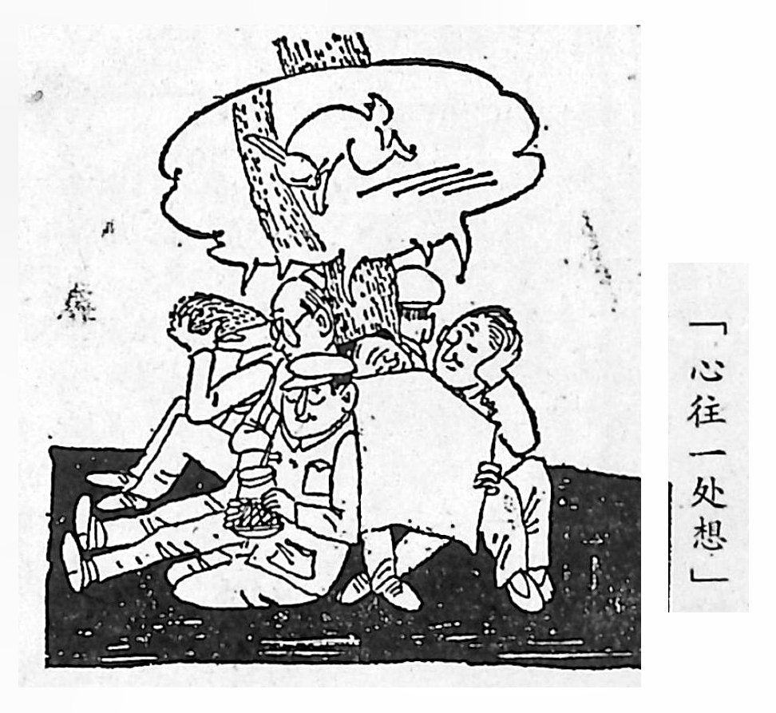

佚名 《人事》1988年第7期（总第34期），第47页
“心往一处想”
“All Thinking the Same Thing”
- Description
- Four men sit huddled around a tree stump, heads together, sharing one thought bubble: a hare running headlong into the trunk of a tree.
- Note
- The image is the fable 守株待兔: a farmer saw a hare break its neck against a tree stump and spent the rest of his days waiting by the stump for another. The title, 心往一处想, is half of the slogan 心往一处想，劲往一处使 — “think as one, pull as one” — here everyone is united in waiting for a windfall.
- Artist
- Unattributed 佚名
- Published in
- 《人事》1988年第7期（总第34期）, p. 47
- Themes
- Bureaucratism · Fable, legend and history

Cite
Unattributed, ““心往一处想”” [“All Thinking the Same Thing”], Renshi (Personnel) 《人事》, 1988, no. 7, p. 47.